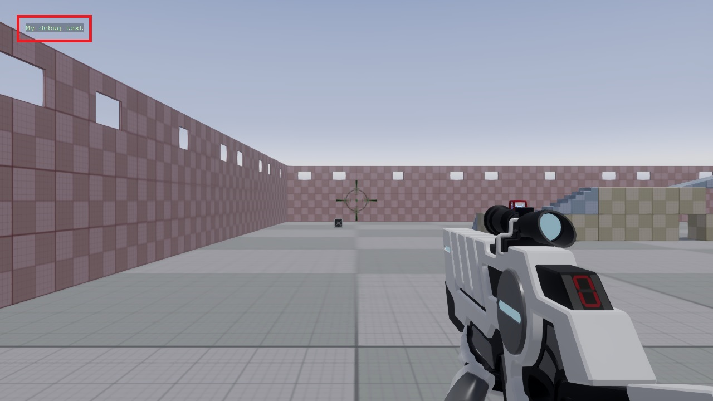

デバッグ テキスト
初級 プログラマー
実行時に、DebugText クラスを使って、デバッグテキストを描画することができます。例えば、問題が発生した旨のメッセージを表示することに使うことができます。
Note
デバッグテキストは、リリースモードでビルドした場合、自動的に無効化されます。
スクリプトの Update メソッドに、以下を追加します。
DebugText.Print("My debug text",new Int2(x: 50, y: 50));
ここで、x と y は、テキストを表示するピクセル座標です。
ゲームを起動すると、デバッグメッセージが表示されます。

デバッグテキストを隠すには、次のようにします。
DebugText.Visible = false;
サンプルスクリプト
次のスクリプトは、MyTexture テクスチャーが読み込まれたかどうかを確認する例です。
読み込まれていない場合には、ゲーム画面に "MyTexture not loaded." というデバッグテキストが表示されます。
using Stride.Core.Mathematics;
using Stride.Engine;
using Stride.Graphics;
namespace MyGame
{
public class Script : SyncScript
{
public Texture myTexture;
public override void Start()
{
// Initialization of the script.
myTexture = Content.Load<Texture>("MyTexture");
}
public override void Update()
{
if (myTexture == null)
DebugText.Print("MyTexture not loaded", new Int2(x: 50, y: 50));
}
}
}